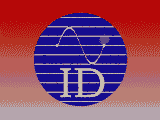

| Overzicht MidOrg |
SpraakAnalyse |
 |
| Index |
| Test
Afname
Rapport en Analyse Toetsenbord en Fonetisch Schrift |
Veelgestelde
Vragen
Programma Vernieuwingen |
Testen
Samenstellen
Analyse Ontwerpen |
De spraakmodule is een computer programma
voor het objectief analyseren van spraakstoornissen bij kinderen. De spraakmodule
is een onderdeel van de MID TestOrganizer (kortweg MIDORG), waarin ook
andere testen zoals neuropsychologische testen, vragenlijsten en polygrafie
zijn ondergebracht. De MID TestOrganizer vormt een krachtige database schil
voor het beheer van patienten-data en test-data.
etc..... of zo iets
De spraakmodule is ontwikkeld door dr.
B. Maassen werkzaam bij de afdeling Medische Psychologie en het IKNC.
Het spraakmodule programma is gerealiseerd
door de Instrumentele Dienst / SPON
van de Medische Faculteit van de KUN / Radboud Ziekenhuis.